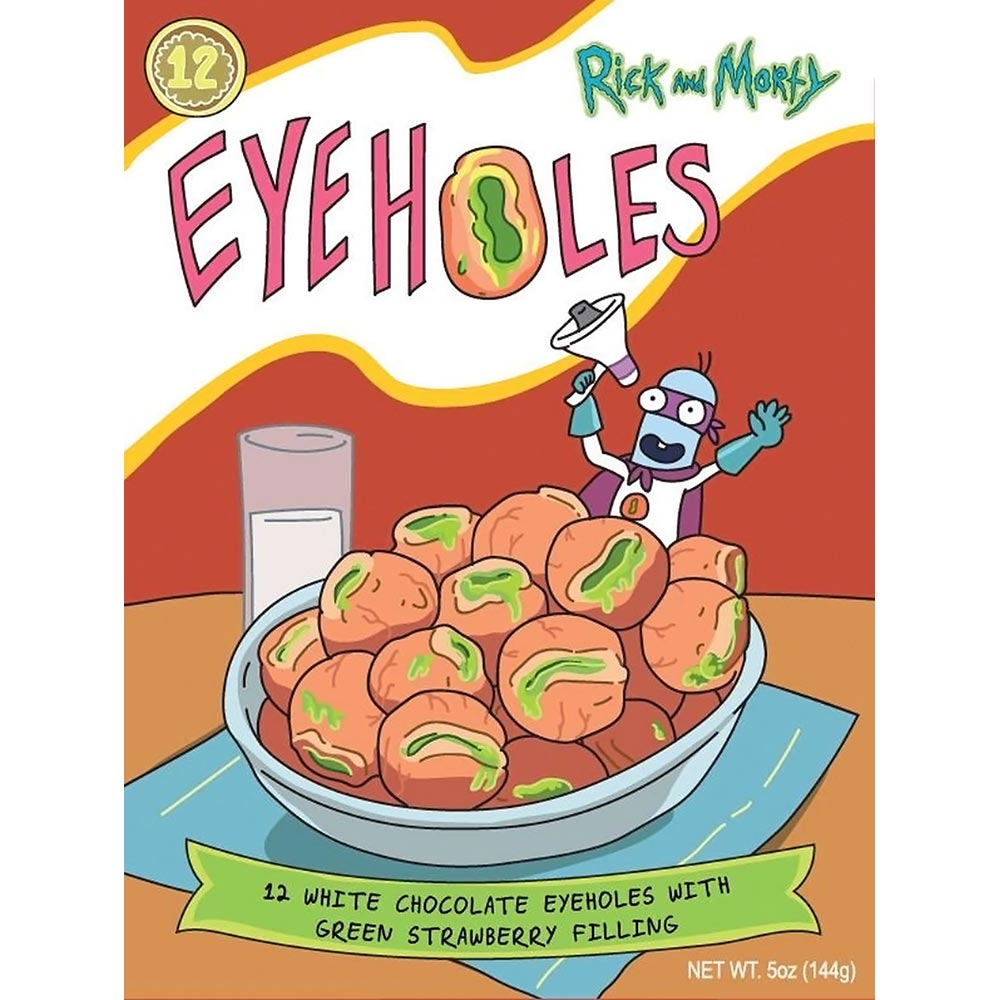

Easy Eyehole & Milk bowl

1.
"They melt in your mouth just by watchin'em"- Rick Sanchez
.
Each box of Eyeholes contains 12 gourmet white chocolate truffles with a green strawberry filling that are unparalleled in this dimension.
And worth the risk of Eyehole Man bursting through a window and kicking the crap out of you.
Ingredients
1 ½ pounds of
Eyeholes
.
6 cups miniature marshmallows of you planetary choice.
1 bowl of Milk of
Glorfingr 7
cow.
3 tablespoon of Gnome sugar
Steps
Grab an empty bowl and pour the Eyeholes in it.
Add 3 spoons of ghome sugar. Stir until flavor settle down.
Pour the marshmallows and heat them up with a regular kitchen torch until desire crunchy taste.
Strongly Advice!
Grab a baseball bat and wait patiently until Eyehole Man appears along and bit the soul out of him.
Enjoy!
Video Rated + 18.
Go back
Click Back to Intergaltic Recipes